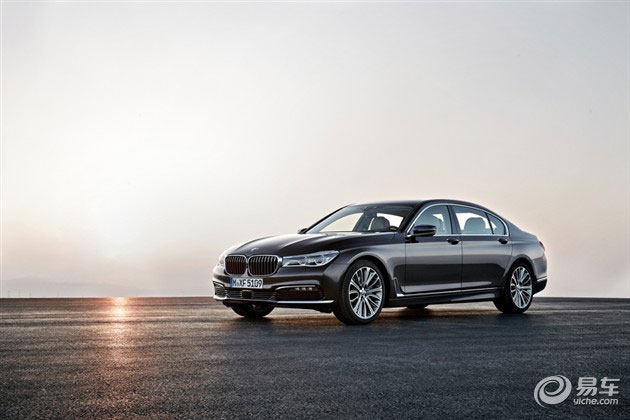

NEWS
BMW或将今年秋季推出7系百年纪念版车型
2016年03月10日 07:50 来源：易车
北京时间3月7日晚上10点，德国BMW集团在德国总部慕尼黑举行了一场规模盛大的庆祝活动，以此来庆祝BMW百年华诞。百年庆典过后，BMW或将计划推出一个7系特别纪念版车型，在外观和内饰细节上进行调整，预计新车将在今年秋季推出。但该消息并未得到BMW官方确认。
现款BMW7系
据消息人士透露，该车将会粘贴100周年纪念徽章，内饰配以豪华特殊真皮。动力方面，新车将搭载两种排量发动机，入门级的3.0升6缸涡轮增压发动机，最大功率235kW；以及4.4升8缸双涡轮增压发动机，最大功率327kW。该车最终可能会推出M系列高性能版车型，并搭载6.6升12缸的双涡轮增压发动机，最大功率441kW。
如果此消息属实，新车将会率先在美国上市。
责任编辑：雷润雨